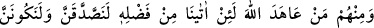
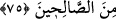

Necmiyye’de böyle geçmektedir.
75. Onlardan kimi de: “Eğer Allah bize fazlından verirse elbette sadaka
vereceğiz ve salihlerden olacağız.” diye Allah’a and içti.
“Onlardan” münâfıklardan “kimi de: “Eğer Allah bize fazlından verirse elbette
sadaka” zekatı ve diğer sadakaları “vereceğiz ve sâlihlerden olacağız.” diye Allah’a
and içti.” yemin etti.
“Sadaka”ya bu ismin verilmesi kulun kulluktaki sadâkatine delâlet etmesi
sebebiyledir.
İbn Abbas (r.a.), “sâlihlerden olacağız” sözleri ile haccı kasdetttiklerini söylemiştir.
Bu âyet, Ensâr’dan Sa‘lebe b. Hâtıb hakkında inmiştir. Bu şahıs, gece gündüz
Rasûlullah (a.s.)’ın mescidine devam ederdi. Bu yüzden kendisine “mescid güvercini”
adı verilmişti. Toprağa ve güneşte kızgın hale gelen taş üzerine çok secde etmesi
sebebiyle alnı, deve dizi gibi nasırlaşmıştı.
Daha sonraları bu şahıs, Rasûlullah (s.a.) sabah namazını cemaate kıldırır kıldırmaz
beklemeden ve duâ etmeden mescidden çıkmaya başladı. Bir gün Peygamber (a.s.) ona:
“Sana ne oldu ki mescidden acele çıkmak suretiyle münâfıkların yaptığı gibi
yapıyorsun?” deyince:
“Yâ Rasûlallah! Ben çok fakir bir durumdayım. Bana ve karıma ait tek bir elbisemiz
var. O da şu anda üzerimde bulunandır. Ben onunla namazımı kılıyorum, karım evde
çıplak bekliyor. Sonra ben karımın yanına gidiyor elbiseyi çıkarıyorum, karım onu
giyiyor ve namazını kılıyor. Allah’a duâ et de bana mal ihsan etsin.” diye cevap verdi.
Peygamber (a.s.): “Yazıklar olsun sana ey Sa‘lebe, şükrünü edâ edebileceğin az mal,
şükrüne güç yetiremiyeceğin çok maldan daha hayırlıdır.” buyurdu.
Sa‘lebe yine aynı istekte bulununca Paygamber (a.s.): “Allah’ın Peygamberi gibi
olmaya râzı değil misin? Nefsimi kudret elinde bulunduran Allah’a yemin olsun ki
şayet ben, dağların altın ve gümüşe dönüşüp benimle birlikte hareket etmesini
istesem, bu hemen olur.” -bununla kimya ilmine işaret etmiştir-, “Fakat ben biliyorum
ki dünya, (âhiretten) nasibi olmayan kimsenin nasibidir. Aklı olmayan kişi ona
kanar.” buyurdu. Fakat Sa‘lebe, tekrar müracaat edip:
“Yâ Rasûlallah! Seni hak peygamber olarak gönderen Allah’a yemin olsun ki eğer
Allah’a bana mal ihsan etmesi için duâ edersen, her hak sahibine hakkını mutlaka
vereceğim.” deyince Peygamber (a.s.):
“Ey Allah’ım! Sa‘lebe’ye mal ihsan eyle.” diye üç defa duâ etti.